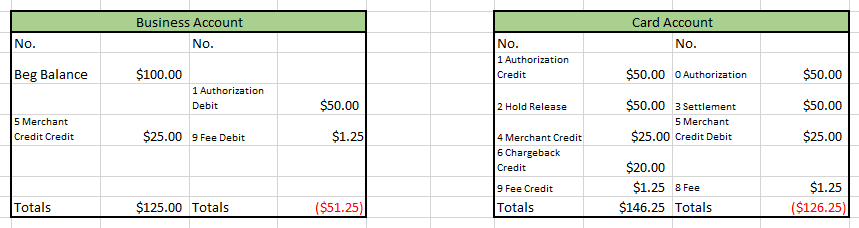

Transaction Authorization and other offset transfers
When a transaction authorization request is approved for a card account that has a spending ruleset assigned to it with use PEX account balance turned on, the authorization hold will post to the card account just as it does when the card account balance is used in the transaction authorization decisioning process. When a matching settlement transaction is identified and posts, a hold reversal will also post - just as it does when card account balance is used.
- Fees that post to the card account (currently just the ISA fee assessed for
international transactions) will result in a system generated balance transfer to offset the
fee posted to the card account.
- Net Effect: transferring fee debit from card account to business account.
- Merchant Credits that post to the card account (representing refunds for goods or
services) will also result in a system generated balance transfer to offset the fee posted
to the card account.
- Net Effect: transferring merchant credits from card account to business account.
- Reversals that post to the card account will result in a system generated balance
transfer to offset the “credit” that posted to the card account.
- Net Effect: transferring balance that is created by the reversal from card account to business account.
- Settlement Amounts that don’t match the authorization amount that post to the card
account will result in a system generated balance transfer to offset the difference between
the authorized amount and settled amount.
- Net Effect: funding the difference from the business account in order to offset the negative balance that was created on the card account.

NOTE REGARDING SETTLEMENT TRANSACTIONS: Settlement transaction amounts that are not equal to authorized transaction amounts or that post unmatched to an authorization may create negative card balances (or unexpected reduction of existing card balances). To clear negative balances, use one of the methods described below:
- If your company zeroed out card balances when business account balance based authorization decisioning was implemented or never loaded cards (and hasn’t loaded cards): Use the Cards/Search page to identify all negative balance accounts by searching for Balance Less Than Zero. Select all card accounts that appear in the result (checkbox at the top of the leftmost column) and then click on “Remove all balances.” This action will result in credits to each account being created that are equal to the amount of negative balance (with the offset to the business account). Run the Card funding transactions report for Today to record the results of this action for reference in researching the cause(s) of each negative balance so that the appropriate accounting adjustments can be made. The Authorized amount vs Settled amount report can also be used to support accounting entries for differences between the authorized and settled amounts of any transaction.
- If your company does not zero out card balances when business account balance based authorization decisioning is implemented or is loading cards: Just prior to implementing business account balance based authorization decisioning, run the Cardholder available balance report to capture card account balances. Any time after business account balance based authorization decisioning has been implemented, run the Cardholder available balance report again and compare card account balances to the original version of this report. Research activity on card accounts where the balances don’t match so that the appropriate accounting adjustments can be made.
EXPIRED AUTHORIZATIONS: Expired authorizations mean that one of two situations has occurred:
- The merchant never settled the transaction
- PEX could not match the settlement and the authorization.
In situation #1, a hold release will occur creating a positive balance on the card account (in the amount of the hold release) or an unexpected change to any existing card balance. Use the Expired authorizations report to identify accounts where transaction authorizations have expired without settling. Defund the card using the quick fund feature (create a “-” funding) to move the funds back to your business account and make them available for use again.
In situation #2, the authorization will expire (because it was never matched to a settlement), a hold release will occur but a settlement will also be posted that will offset the positive balance created by the hold release. However, one reason that PEX may not be able to match a settlement and authorization is that the settlement and authorization amounts are different (typically the settlement amount > authorization amount). If this is the case, the difference between the authorization and settlement will create a card balance (or an unexpected change to any existing card balance).
- If your company zeroed out card balances when business account balance based authorization decisioning was implemented or never loaded cards (and hasn’t loaded cards): Use the Cards/Search page to identify all negative balance accounts by searching for Balance Less Than Zero. Select all card accounts that appear in the result (checkbox at the top of the leftmost column) and then click on “Remove all balances.” This action will result in credits to each account being created that are equal to the amount of negative balance (with the offset to the business account). Run the Card funding transactions report for Today to record the results of this action for support as to why these transfers were made. The Authorized amount vs Settled amount report can also be used to support accounting entries for differences between the authorized and settled amounts of any transaction.
- If your company does not zero out card balances when business account balance based authorization decisioning is implemented or is loading cards: Just prior to implementing business account balance based authorization decisioning, run the Cardholder available balance report to capture card account balances. Any time after business account balance based authorization decisioning has been implemented, run the Cardholder available balance report again and compare card account balances to the original version of this report. In researching any differences, if the card account appears on the expired authorizations report compare the expired authorization amount to the actual settled amount to identify as a cause for balance discrepancies.